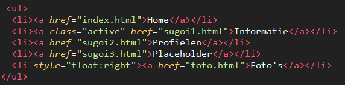

___ _____ _ _ _____ _ _
|_ | / ___| | | | | | ___| | | (_)
| | __ _ _ __ \ `--. ___| |__ _ _ _ _| |_ | |__ _ __ | |_ ___ _ __ _ __ _ __ _ ___ ___ ___
| |/ _` | '_ \ `--. \/ __| '_ \| | | | | | | __| | __| '_ \| __/ _ \ '__| '_ \| '__| / __|/ _ \/ __|
/\__/ / (_| | | | | /\__/ / (__| | | | |_| | |_| | |_ | |__| | | | || __/ | | |_) | | | \__ \ __/\__ \
\____/ \__,_|_| |_| \____/ \___|_| |_|\__,_|\__, |\__| \____/_| |_|\__\___|_| | .__/|_| |_|___/\___||___/
__/ | | |
|___/ |_|
Mijn code komt vooral van sites zoals W3schools en Stackoverflow, waar ik Stackoverflow voor dingen die wat meer custom zijn
zoals deze achtergrond en de muziek.
W3schools gebruik ik voor alle dingen die standaard zijn, zoals commands.
Ook heb ik een ascii art generator gebruikt voor de Jan Schuyt Enterprises Banner. Ik vind ascii art zelf erg mooi, omdat het erg creatief is.
De achtergrond muziek is Fly me to the moon door Frank Sinatra. Ik vind oudere muziek altijd een goede sfeer hebben. Vooral muziek van rond 1950 vind ik mooi.
Voor de navigatiebalk heb ik een list gebruikt, en gestyled met css. Het plaatje hieronder laat zien hoe dat in elkaar zit.

Zelf vond ik het moeilijkste deel om uit te vogelen hoe je de navigatiebalk er netjes uit laat zien.
De achtergrond is een gigantish block van css. Ik vond de code op Stackoverflow, en na wat lichte aanpassingen werkt het allemaal goed (genoeg)